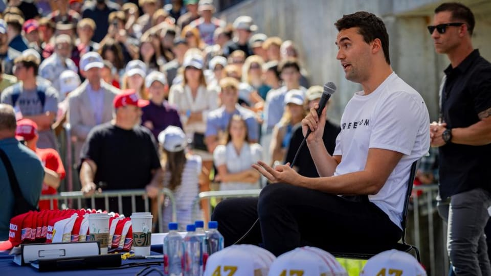

世界苦茶09月11日新闻 | 42条 | 中国8月CPI和PPI继续下探

中国8月CPI和PPI继续下探 | 美国保守派活动家演讲遭枪杀 | OpenAI5年将向甲骨文购买3000亿美金算力 | 中国在南海争议水域建立国家保护区 | 法国发起封锁一切抗议运动
苦茶数据
美元兑人民币：7.11（昨日7.12，前日7.12）
美元兑日元：147.46（昨日147.34，前日147.39）
上证指数：3851（昨日3813，前日3815）
标普500指数：6532（昨日6512，前日6495）
比特币：114337（昨日111463，前日111542）
布伦特原油：67.25（昨日66.96，前日66.37）
中国新闻
• 王毅批美行径损中美关系 ：中共中央政治局委员、外交部长王毅同美国国务卿鲁比奥通电话时，批评美国近来采取的消极言行，不利于中美关系的改善与发展。据中国外交部网站，王毅星期三与鲁比奥通电话。王毅说，中美这两艘巨轮要共同前行，不偏航、不失速，就必须坚持两国元首的战略引领不动摇，坚持落实两国元首重要共识不打折扣。
• “小A在上网”全平台下架 ：受到不少中国年轻人追捧的知名躺平博主“小A在上网”，被全网下架所有视频。他长期浪迹于中国各地网吧打游戏，并以此为视频素材走红中国网络，被视为是新时代“三和大神”的代表人物之一。“小A在上网”8月23日在中国视频平台B站发文称，他的抖音账号被封，视频均被下架，而且无法申诉，客服告知原因是“作品违反互联网相关法律法规”，因此“暂时不在那边更新了，只在阿B这边更新”。不过“小A在上网”上周六又再度发文称：“跟兄弟们汇报个事情，我现在全平台的视频都被下了，并不是我主动删的。还在积极沟通。”
• 中国公布黄岩岛国家级保护区 ：中国官方批准在南中国海有主权争议的黄岩岛建立“国家级自然保护区”后，中国国家林业和草原局公告，这个保护区面积达3523.67公顷，主要保护对象是珊瑚礁生态系统。中国国家林草局星期三晚公告称，根据《中华人民共和国自然保护区条例》有关规定，现将黄岩岛“国家级自然保护区”的面积、范围及功能区划予以公布。公告中的附件信息称，黄岩岛“国家级自然保护区”位于海南省三沙市，面积3523.67公顷，其中核心区面积 1242.55 公顷，实验区面积2281.12公顷，主要保护对象为珊瑚礁生态系统。
• 杜尚泽长文描绘习近平繁忙外交 ：长期负责报道中国国家主席习近平新闻的女记者杜尚泽，在成为中共中央机关报《人民日报》首名“80后”高层后的最新长文中，披露警卫员塞饼干给翻译让习近平吃等外交活动细节，形容他“以身许国，夙夜在公”。《人民日报》星期一刊发了杜尚泽撰写的《总书记的这六天》一文。全文近5000字。文章首先细数了习近平从上海合作组织峰会到北京九三大阅兵期间的日程：8月30日，六场会见；8月31日，白天八场会见，晚上欢迎宴会；9月1日，一整天多边会议；9月2日，八场在北京的会谈会见，一场三方会晤；9月3日，中国抗战胜利纪念大会、招待会、文艺晚会之外，又在下午增加了一场会见。
• 中国防部警告日本军扩重蹈覆辙 ：日本2026财年的防卫预算拟创新高后，中国国防部说，决不允许日本军国主义卷土重来，并呼吁日本在军事安全领域谨言慎行，避免重蹈历史覆辙。据中国国防部网站消息，中国国防部新闻发言人蒋斌星期三在新闻发布会上说，日本加速军事扩张，发展远超“专守防卫”所需的军力，包括进攻性武器装备，“不禁让全世界爱好和平的人民警惕担忧，日方究竟意欲何为？”他说，80年前，日本军国主义发动侵略战争给亚洲国家人民带来深重灾难。80年后的今天，地区国家捍卫和平的意愿更加强烈，决不允许日本军国主义卷土重来。
• 王毅将出访奥地利斯洛文尼亚波兰 ：中国外交部长王毅将从星期五起，访问位于欧洲中部的奥地利、斯洛文尼亚，以及波兰。中国外交部星期三在官网宣布，应奥地利外长迈因尔-赖辛格、斯洛文尼亚副总理兼外长法永、波兰副总理兼外长西科尔斯基邀请，王毅将于9月12日至16日访问奥地利、斯洛文尼亚、波兰。
• 六部门整治汽车行业网络乱象 ：中国工信部等六部门联合部署开展汽车行业网络乱象专项整治行动，为期三个月。据人民日报客户端消息，为落实中国国务院常务会议关于切实规范新能源汽车产业竞争秩序部署要求，工业和信息化部、中央社会工作部、中央网信办、国家发展改革委、公安部、市场监管总局等六部门联合印发《关于开展汽车行业网络乱象专项整治行动的通知》，决定在全国范围内开展为期三个月的汽车行业网络乱象专项整治行动。本次专项整治行动将集中整治非法牟利、夸大和虚假宣传、恶意诋毁攻击等网络乱象，提升涉汽车企业网络乱象处置质效，督促企业规范营销宣传行为，营造良好舆论环境，护航汽车产业高质量发展。
亚太印太新闻
• 尼泊尔拟推卡尔基任看守总理 ：尼泊尔抗议者希望前首席大法官苏希拉·卡尔基出任看守总理。综合路透社和法新社报道，尼泊尔最高法院律师协会秘书星期三表示，他已就此事接受抗议者的咨询。尼泊尔民航局同日称，首都加德满都的主要国际机场已恢复运行。
• 郑丽文参选国民党主席主推蓝白合 ：台湾在野的国民党将在下月改选主席，已表态参选的前立委郑丽文说，蓝白合是重中之重；若当选主席，她将尽快建立两党合作的机制与平台，全面推动相关工作。综合台湾《自由时报》《联合报》报道，国民党主席选举将在10月18日举行。现任主席朱立伦坚持交棒，党内呼声最高的台中市长卢秀燕则无意参选。目前，已有立委罗智强、孙文学校总校长张亚中、前彰化县长卓伯源，以及郑丽文等人表态参选。前台北市长郝龙斌也表示有意参选并已着手准备，但称将与前中广董事长赵少康协调一人出马。
• 传比亚迪高管将赴印评估工厂 ：知情人士透露，中国电动汽车制造商比亚迪高管未来几个月将前往印度，会见政府官员并考察车厂，车企有望结束持续五年远程管理印度业务的现状。彭博社星期三引述知情者报道，随着印中外交关系回暖，比亚迪印度公司总经理张杰预计在下来几个月赴印。期间他将在首都新德里会见印度政府官员，随后前往考察比亚迪工厂。据此前报道，印度和中国2020年爆发边境冲突，两国关系严重恶化，包括比亚迪在内的中企管理人员一直都无法获得签证。张杰目前在日本东京管理印度在内的亚洲市场。
• 李在明批“反华”示威吁研惩处 ：韩国总统李在明批评首尔明洞发生的“反华”示威，并要求有关部门积极考虑加以制裁的方案。据韩联社报道，李在明星期二在龙山总统府主持国务会议时说，听闻一些团体近期在首尔明洞举行针对特定国家游客的歧视性集会，蓄意破坏双边关系，并向相关部门询问应对方案。韩国行政安全部长官尹昊重回应，已加强驻地外交机构周围的警卫，并警告集会主谋。报道称，李在明也要求有关部门积极考虑加以制裁的方案。
• 被扣韩国公民拟搭包机回国 ：韩国外交消息人士透露，被美国移民机构拘留的韩国公民将于星期三下午2时30分乘包机回国。路透社报道，韩国外交部未立即回应置评请求。美国国务院说，美国国务卿鲁比奥将于星期三在白宫会见韩国外交部长赵显。另据韩联社报道，预计被美国扣押的300多名韩国公民中，大多数自愿回国，是否全员回返韩国尚未得到确认。在佐治亚州工厂一起被拘留的其他外籍员工，也可能乘韩国包机离开美国。
• 金正恩称巩固“拥核国”绝对地位 ：朝鲜领导人金正恩出席建政纪念活动时重申将进一步巩固朝鲜的“拥核国”地位。韩联社星期三引述朝中社报道，金正恩前一天在建政77周年升国旗仪式和中央宣誓大会致辞时，向参加海外军事作战的朝军将领、军官和士兵诚挚敬礼。他说，朝鲜如今攀升至非比寻常的地位，是朝鲜过去77年强国建设伟业的骄人成绩总结。现在任何人或任何手段都不能威胁朝鲜的绝对地位和安全，称朝鲜用双手开启的繁荣时代洪流无法逆转。分析人士称，金正恩在致辞中提到“非比寻常地位”和“拥核国”地位，旨在强调朝鲜绝不放弃这一地位的决心。
• 印尼乳牛进口滞后拖累免费营养餐 ：印度尼西亚免费营养餐计划的核心之一是给全国8300万学生和孕妇提供牛奶，政府的目标是在五年内进口100万头乳牛。然而，政府预算不足，转而施压私人企业资助进口乳牛。这种非传统做法在商界引发担忧。乳牛进口计划去年12月展开，进口的乳牛由多家牛奶合作社负责管理和生产。然而，计划进展缓慢。政府数据显示，截至今年7月底，只进口了1万1375头乳牛，远低于每年20万头的目标。乳牛进口计划进展缓慢，将影响政府扩大免费营养餐计划的步伐。
• 韩国政府表示，由于特朗普鼓励被扣留的韩国工人留在美国，遣返工作被推迟： 李在明表示，移民突袭行动可能对韩国企业在美投资产生“重大影响”。韩国政府表示，由于唐纳德·特朗普总统鼓励被扣留的约300名韩国公民留在美国工作，遣返工作被推迟。与此同时，李在明总统警告称，最新事件可能会影响韩国在美投资。“特朗普总统表示，被扣留的韩国公民都是技术工人，他想探讨他们是否可以留在美国继续工作并培训美国工人，而不是回国，”一位外交部官员周三（当地时间）在华盛顿告诉记者。“因此，他下令暂停遣返程序。”这位官员指出，这一解释是在外交部长赵铉当天早些时候与美国国务卿马尔科·卢比奥在华盛顿会晤时做出的。
科技新闻
• 传OpenAI五年购甲骨文算力三千亿 ：知情人士表示，OpenAI已签署一项协议，将在大约五年内向甲骨文购买价值3000亿美元的算力，这一巨额承诺远超该初创公司当前收入。这笔交易是有史以来规模最大的云服务合同之一，反映出尽管对潜在泡沫的担忧日益加剧，人工智能数据中心的支出仍创下新高。甲骨文这份合同将需要 4.5 吉瓦的电力容量，大致相当于两个以上胡佛水坝的发电量或约四百万户家庭的用电量。OpenAI和甲骨文的合同将于2027年生效，对于两家公司来说，这都是一场风险赌注。甲骨文在六月份申报文件中首次披露该交易时表示，已达成一项云计算服务协议，从2027年起每年将为其带来超过300亿美元的收入。
财经新闻
• 瑞士民调支持深化对欧新协议 ：一项最新调查显示，在美国对瑞士加征关税所引发的震动和不确定性背景下，多数瑞士选民倾向支持一份深化与欧盟经济关系的新协议。路透社报道，这项由《观察报》公布、民调机构GFS Bern执行的调查覆盖约1000名受访者。结果显示，61%的瑞士人表示“强烈支持”或“倾向支持”去年12月达成的欧盟经济关系新协议，反对者占比约30%，其余未表态。调查主要在7月和8月进行，当时美国关税的全面影响尚未完全显现。美国总统特朗普8月7日宣布对瑞士征收39%关税，属全球最高水平之一，理由是美国对瑞士存在贸易逆差。这一关税远高于对欧盟的15%税率，令长期对美国态度友好的瑞士企业深感震惊。
• 德国对华进口激增以铜衣玩具为主 ：路透社星期二看到的德国劳动力市场与职业研究所一项研究显示，随着美国关税举措扰乱全球贸易流动，德国正增加自中国进口几个价格敏感类商品。根据IAB基于德国统计局数据的分析，去年10月至今年6月期间，经价格和日历调整后的数据显示，德国自中国进口同比大幅增长，其中以铜（+91%）、服装（+24%）以及玩具、游戏和体育用品（+12%）增幅最为突出。
• 中国转采南美大豆美农错失对华单 ：交易商和分析师说，由于贸易谈判陷入僵局导致出口受阻，加上南美竞争对手介入填补缺口，美国农民在大豆主要销售季过半时，已错失对华数十亿美元的销售机会。路透社报道，根据两名亚洲贸易商，中国进口商已预订约740万吨主要来自南美的大豆，计划在10月装运，占当月预计需求的95%。此外，中国还预订了11月装运的100万吨大豆，约占预期进口量的15%。一名驻新加坡的国际贸易公司贸易商称，截至去年同期，中国买家已预订约1200万至1300万吨美国大豆，将于9月至11月期间装运。
• 法官阻特朗普解雇美联储理事库克 ：美国华盛顿特区联邦地区法院法官星期二作出一项裁决，暂时阻止美国总统特朗普解除美联储理事库克的职务。美国媒体报道，华盛顿特区联邦地区法院法官科布认为，特朗普以库克在担任美联储理事前涉嫌住房抵押贷款欺诈为由解除她的职务，违反了旨在保护美联储免受政治压力影响的联邦法律。科布在裁决中指出，只有在美联储理事会工作中的行为才能成为库克被解职的理由，“公众对美联储独立性的关注支持库克复职”。
• 中国8月CPI降0.4%PPI降2.9% ：中国8月居民消费价格指数同比下降0.4%，创下六个月来最大跌幅；工业生产者出厂价格指数同比下降2.9%，跌幅较上月有所收窄。中国国家统计局星期三公布的数据显示，8月CPI同比下降0.4%，环比持平，高于路透社调查预期的0.2%跌幅，也是继2月下降0.7%以来的最大降幅。此外，8月PPI同比下降2.9%，较7月的3.6%降幅有所收窄，符合经济学家预期。
• 在华美企五年信心降至历史新低 ：一项调查显示，政治紧张局势、激烈的国内竞争以及中国经济增长放缓，正在削弱美国企业对中国的信心，它们对未来五年前景的乐观程度已降至历史新低。据路透社报道，上海美国商会星期三发布的调查显示，仅有41%的美国企业对未来五年在华业务的前景表示乐观，比去年下降六个百分点。这是上海美国商会自1999年发布年度报告以来，乐观程度最低的一次。这项调查对象为涵盖各行业的254家会员企业，调查时间正值美国总统特朗普宣布全面征收所谓“解放日”关税之后不久。
• 美劳工部下修就业增幅逾91万 ：美国劳工部星期二发布初步修订数据，2024年4月至2025年3月，美国新增就业岗位比最初统计的少91万1000个，这表明美国就业市场的实际表现比此前数据显示的更为疲软。新华社报道，美国劳工部的修订数据显示，上述时间内，美国休闲与酒店业新增就业岗位比最初统计少17万6000个，专业和商业服务业少15万8000个，零售业少12万6000个。美国媒体说，美国劳工部此次大幅向下修正就业增长数据，加剧人们对美国经济疲软的担忧。 （翻評：下修拜登任期就業增幅，為川大總統創造一個低基數。完全不要臉了。）
• 最高法院11月审特朗普关税案 ：美国最高法院定11月审理特朗普总统向世界各国大规模征收关税引发的诉讼。特朗普上周要求最高法院做出“快速裁决”，以推翻联邦上诉法院认定他对其他国家征收的大部分关税违法的判决。综合路透社和彭博社报道，8月29日，华盛顿联邦巡回上诉法院以7比4的表决结果维持下级法院的裁决，认定特朗普援引1977年《国际经济紧急权力法案》向其他国家征收广泛关税，超越了总统权限，但法院将判决生效日期推迟至10月14日，以给予特朗普政府时间向最高法院提出上诉。美国最高法院星期二同意在11月第一周听取控辩双方的口头辩论，以决定特朗普援引这项法案征收关税是否合法。这一异常紧凑的日程安排表明最高院希望迅速解决此案。
俄乌战争
• 波兰称19架无人机越境多被击落 ：波兰总理图斯克称，过去一夜共有19架无人机闯入波兰领空，其中大部分来自白俄罗斯。他说，已确认有三架被击落，第四架“很可能”也被击落。路透社报道，图斯克星期三在议会指出：“这些无人机构成安全威胁，而事实证明它们已被击落，这改变了政治局势。因此，盟国磋商已采取正式程序，请求启动《北约条约》第四条。”根据条约规定，北约第四条允许任何成员国在感到自身领土完整、政治独立或安全受到威胁时，要求盟国立即进行磋商。
• 北约未定性俄袭盟国但视为入侵 ：北约一名消息人士强调，尽管有六至10架无人机夜间闯入波兰领空，但北约并未将此定性为俄罗斯对盟国的袭击，而是作为一次蓄意入侵处理。路透社报道，这名知情人星期三指出，这是北约飞机首次在盟国领空内应对潜在威胁。北约部署在该地区的“爱国者”防空系统虽通过雷达发现目标，但并未拦截。此次行动中，波兰F-16战机、荷兰F-35、意大利预警机以及北约联合操作的空中加油机均有参与。不过，捷克外长利帕夫斯基直言，这一事件显示俄罗斯的战争威胁已波及“所有人”，并敦促北约立即强化前线防空。
• 美拟扩大对俄油买家征关税 ：一名美国官员星期二向法新社披露，美国准备扩大针对俄罗斯石油买家的关税，以打击俄罗斯用于乌克兰战争的资金来源。他还说，如果欧盟向购买俄罗斯石油的中国和印度征收关税，美国总统特朗普也准备向中印征收等额关税。这名未获授权公开谈论这些细节的美国官员说，特朗普连线参加了美欧官员会议，并提出对俄罗斯石油买家包括中国和印度征收50%至100%关税的可能性。
国际新闻
• 伊朗同意国际原子能机构进入其核设施： 国际原子能机构负责人表示，伊朗已同意允许该机构进入其主要核设施，这为国际核查人员评估美国和以色列六月份空袭造成的破坏、以及检查德黑兰方面的近武器级浓缩铀库存开启了可能性。伊朗外长阿巴斯·阿拉格齐和国际原子能机构总干事格罗西经过数周的反复磋商，于周二晚间在开罗达成了该协议。在六月份其主要核设施遭到袭击后，德黑兰方面暂停了与该机构的合作。外交官们表示，该协议没有说明核查人员何时能够访问这些地点，包括纳坦兹和福尔道的浓缩设施以及伊斯法罕的核设施群。在核查人员前往核实信息之前，伊朗必须就这些地点的状况及其浓缩铀库存编写报告。
• 也门称以军空袭致35死逾130伤 ：也门胡塞武装称，以色列9月10日对也门的空袭造成至少35人死亡、130余人受伤。大多数遇难者位于首都萨那。当地的军事总部和燃料储存设施是被袭地点。目前搜救行动仍在继续。以色列军方10日表示，将加快在加沙城附近的攻势，要求巴勒斯坦人向南撤离至指定的安全区。然而许多人因无力或无钱而拒绝离开。加沙卫生部门称，过去24小时有至少41人被以色列炮火杀死。
• 特朗普否认默许多哈袭击 ：美国总统特朗普否认为以色列袭击卡塔尔开绿灯，并罕见地就此事批评内坦亚胡政府。但以色列坚称，将继续瞄准哈马斯分子，让他们无处可躲。特朗普周二在华盛顿接受媒体采访时表明，对以色列袭击多哈很不高兴。根据他在社交媒体上的帖子，美国军方当天上午通知美国政府，以色列将袭击身处卡塔尔首都多哈的哈马斯政治领导人。他立即指示白宫中东特使威特科夫通知卡塔尔，但为时已晚。 以色列媒体称，美国为此次行动开了绿灯。但特朗普说：“这是以色列总理内坦亚胡的决定，不是我的决定。”
• 保守派柯克演讲遭枪杀 ：美国知名保守派活动人士、总统特朗普的政治盟友查理·柯克在犹他州奥勒姆市的犹他山谷大学演讲时遭枪击身亡，终年31岁。枪击事件发生在当地时间星期三中午，联邦调查局局长卡什·帕特尔说，枪杀柯克的嫌疑人已被拘留。社交媒体上流传的手机视频片段显示，31岁的柯克正在犹他州奥勒姆市的校园里向一大群户外人群发表演讲，突然一声枪响。柯克从椅子上摔下来，用手捂住脖子，吓得与会者四处逃窜。
• 欧盟拟对以色列采取限制举措 ：欧盟委员会主席冯德莱恩指出，加沙正在发生的人道主义危机“震撼了世界的良知”，欧盟拟采取一系列新举措加以应对。新华社报道，冯德莱恩星期三在欧洲议会全会上，介绍了欧盟拟采取的一系列新举措，包括暂停对以色列的部分双边支持、对极端主义的部长和暴力定居者实施制裁、部分中止《欧盟—以色列联系国协议》中与贸易相关的事项。同时，欧盟还计划设立“巴勒斯坦援助小组”。冯德莱恩说：“人为制造的饥荒绝不能被用作战争的武器。这种情况必须立即停止。”她强调，欧洲方面“显然需要做得更多”。
• 冯德莱恩呼吁欧盟自我革新应变局 ：欧盟委员会主席冯德莱恩警告，面对一个日益敌视欧洲价值观与民主模式的全球格局，欧盟必须自我革新，才能确保在新的国际秩序中占据一席之地。彭博社报道，冯德莱恩星期三在法国斯特拉斯堡向欧洲议会发表演说时直言：“欧洲必须战斗——为在这个许多大国要么暧昧不明、要么公开敌视欧洲的世界里，争取自身的一席之地……毫不夸张地说，这是一场关乎我们未来的战斗。”冯德莱恩点名俄罗斯对乌克兰的战争、加沙的人道危机以及欧盟的防务短板，都是对欧洲主权的严峻挑战。她同时警告，全球竞争正在被“帝国野心”和“依赖被冷酷武器化”所主导。
• 以方称行动未必总符美方利益 ：以色列空袭卡塔尔境内的哈马斯领导人后，美国总统特朗普罕见表示批评。对此，以色列驻联合国大使达农星期三回应称，以色列并非总是按照美国的利益行事。法新社报道，达农星期三接受以色列电台采访时说：“我们并非总是按照美国的利益行事。我们保持协调，他们给予我们极大支持，我们对此心怀感激，但有时我们会自行做出决定，然后再通知美国。”他补充说：“这不是对卡塔尔的袭击，而是对哈马斯的袭击。我认为这是一个正确的决定。”
• 法国高速路“封锁一切”运动扩散 ：法国一个新兴的抗议运动在多条高速公路上发起“封锁一切”行动，造成交通中断，迫使当局出动大规模警力，目前已有数十人被捕。路透社报道，这场抗议活动于星期三清晨爆发。内政部长勒泰耶说，在波尔多，约50名蒙面者试图设立路障；图卢兹一处发生电缆火患事故，火势虽被迅速扑灭，但已扰乱通往欧什的交通。截至目前，巴黎警方共拘捕75人。高速公路运营商文西集团报告指出，马赛、蒙彼利埃、南特和里昂等地的交通同样受到干扰。勒泰耶透露，全国共部署8万名警力，其中巴黎有6000人。法国媒体此前预计，抗议参与人数可能高达10万。
• 拉马福萨表示，对美谈判不卑不亢 ：南非总统拉马福萨说，南非政府正在就美国加征关税一事与美方接触，在贸易谈判中绝不会“卑躬屈膝”。新华社报道，拉马福萨星期二下午在南非国民议会回答议员提问时说，南非政府代表正在美国与政府官员、国会议员、工商界人士等进行接触，以推进未来的正式谈判，目标是达成互惠互利的贸易和投资协议。拉马福萨说：“显然，我们与之打交道的美国政府有时行事难以预测，有时甚至会采取报复措施，但南非不会低三下四，也不会卑躬屈膝，我们过去不曾这样做，将来也绝不会这样做。”
• 墨西哥城油罐车翻覆爆炸伤57人 ：墨西哥首都墨西哥城一辆油罐车9月10日在高速公路立交桥附近翻倒后爆炸。爆炸波及了附近的18辆汽车，造成至少57人受伤，其中一些人全身烧伤。大火已经扑灭，事故原因仍在调查。